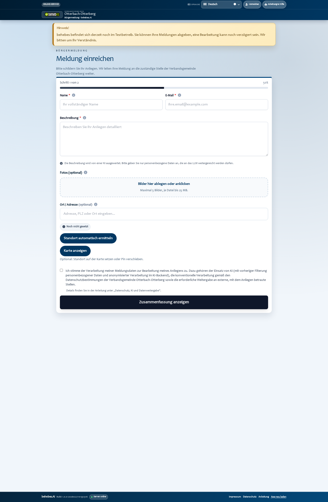
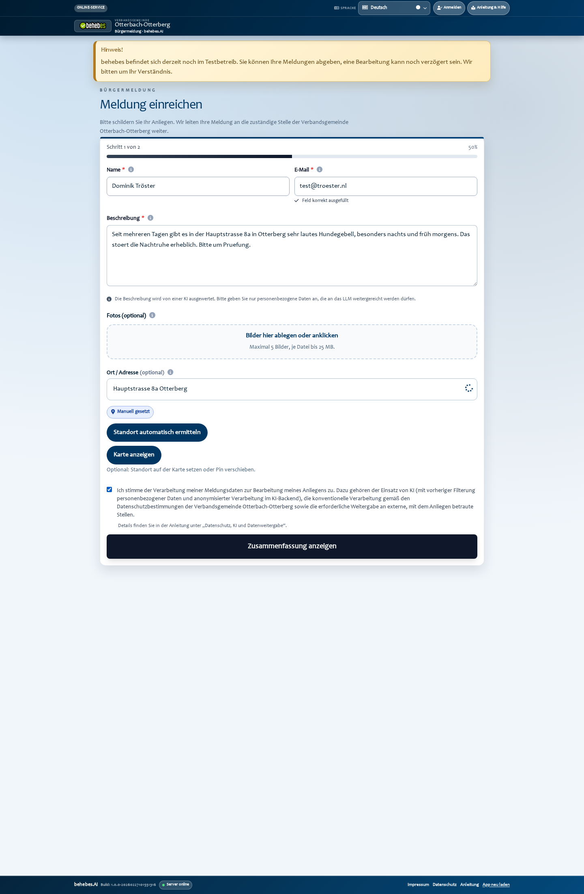
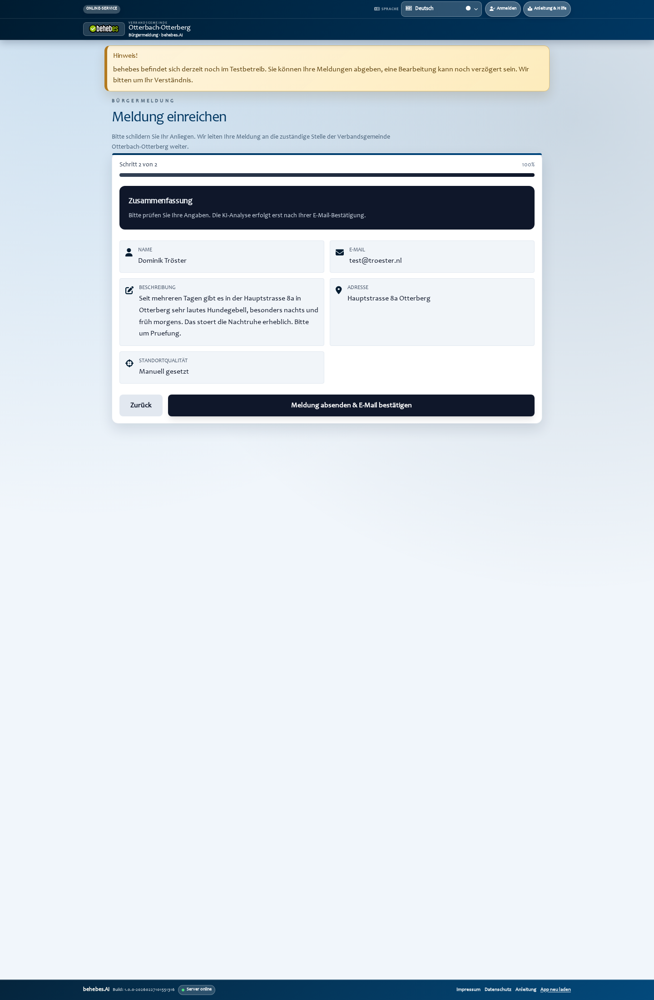
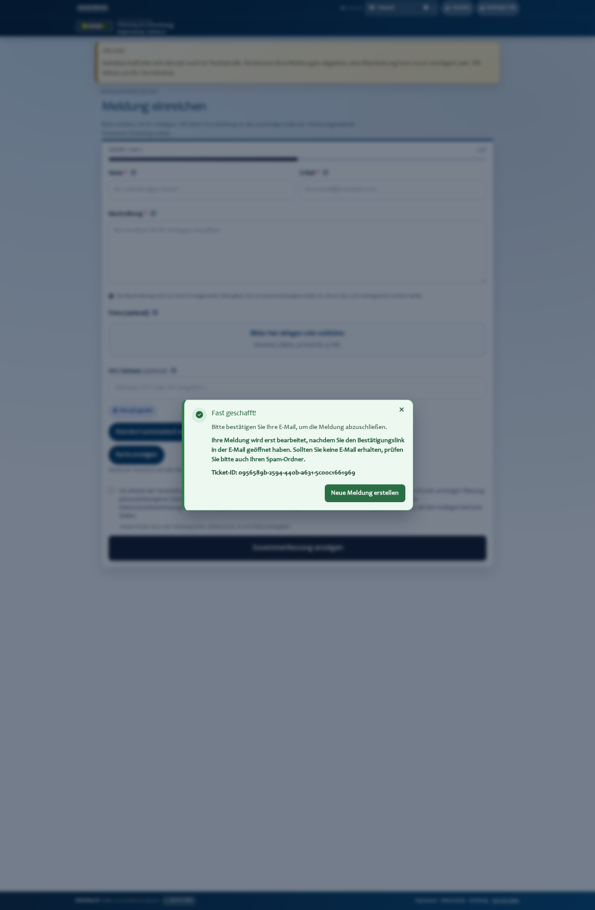

1. Startseite oeffnen
Das Buergerformular ist direkt auf der Startseite sichtbar. Dort werden Name, E-Mail, Beschreibung und Standort erfasst.

Diese Anleitung zeigt den echten Durchlauf im Produktivsystem
https://www.behebes.de mit einem Testfall
"lautes Hundegebell".
open.
Das Buergerformular ist direkt auf der Startseite sichtbar. Dort werden Name, E-Mail, Beschreibung und Standort erfasst.

Dominik Troestertest@troester.nlHauptstrasse 8a OtterbergDanach auf "Zusammenfassung anzeigen" klicken.

In der Zusammenfassung die Angaben noch einmal kontrollieren, dann auf "Absenden und verifizieren" klicken.

Nach erfolgreichem Versand erscheint die Ticket-ID in der Erfolgsmaske.

Erledigt: Der Validierungslink wurde angeklickt. Das Ticket ist jetzt final bestaetigt und im System aktiv.